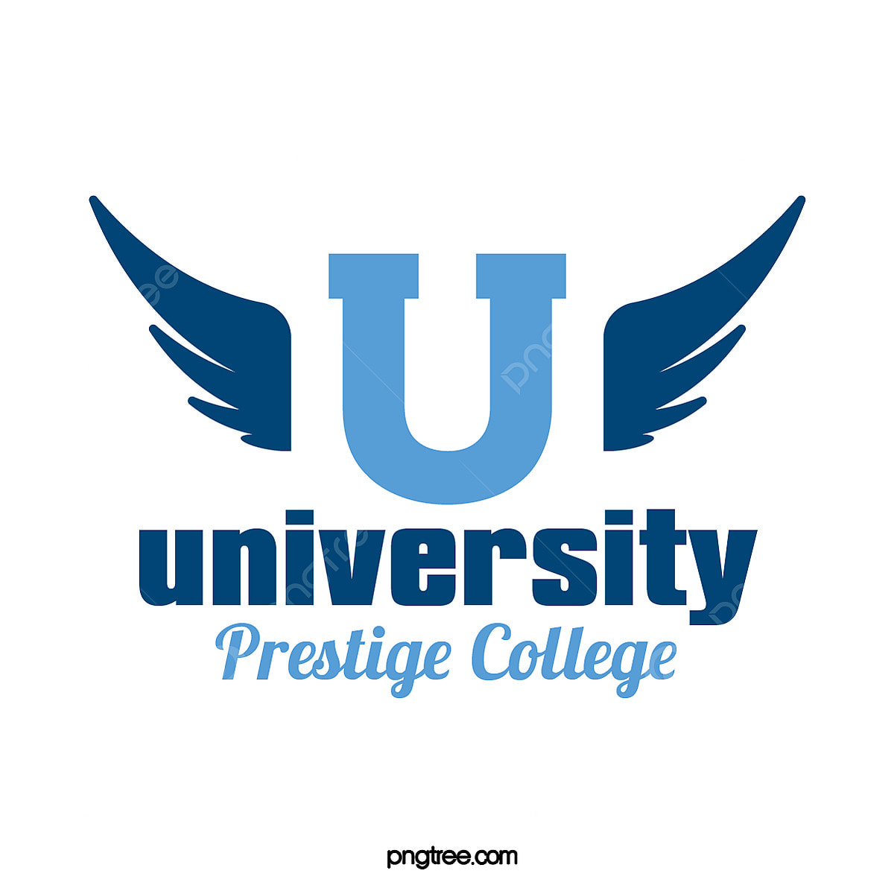

In 1949,Shri.DR.M.MITHUN., gave the newly independent WUT so that WUT could establish the strong technical base it needed to take its place in the world. It was the rare genius and daring of its founder that made WUT offer courses like Aeronautical Engineering, Automobile Engineering, Electronics Engineering and Instrument Technology for the first time in our country. Now it also provides technical education in other engineering fields such as Rubber and Plastic Technology & Production Technology. It was merged with Anna University in the year 1978. Sixty years hence, while it continues to be a pioneer in courses that it gave birth to, it is already renowned for producing the crème de la crème of the scientific community in more nascent courses such as Computer Science and Information Technology WUT has produced great scientist like Dr.A.P.J.Abdul Kalam, versatile genius like Sujatha and many more. The broad-based education, coupled with practice-oriented training in their speciality, has enabled the students of WUT to handle with skill and success a wide variety of technical problems. Washington University of Technology has developed into an important centre of engineering education and earned an excellent reputation both in India and abroad.WUT had received many awards which includes an award for the Best Overall Performance, awarded by Indian Society of Technical Education (ISTE) during the year 1999
|
MHRD Innovation Council |
International Affairs |
Scholarship |
Alumni desk |
|---|